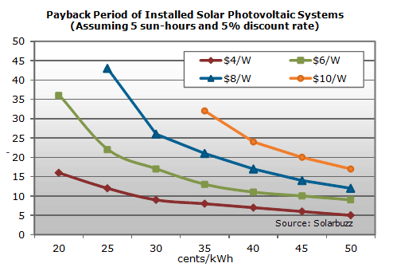

What Can Green Energy Do?
Sustainable energy is an energy source that meets the needs of the present without compromising the ability of future generations to meet their needs. Green Energy is energy that can be extracted, generated, and/or consumed without any significant negative impact to the environment. Green energy includes natural energetic processes that can be harnessed with little pollution. The planet has a natural capability to recover which means energy pollution that does not go beyond that capability can still be termed green.
- Hydroelectric power, geothermal power and biomass briquettes. The first generation contains fewer elements than other renewable energy sources. First generation typically works on large scale projects like a dam or biomass reaction plant. This is not a practical solution for homeowners or small businesses in term of availability.
- Solar energy, wind energy and ethanol. Second generation is the most common renewable energy technology so far . Solar panels and turbines are two common technologies.
- o-fuels, ocean tide energy and "Artificial leaf", which can break water into to oxygen and hydrogen molecules.Third generation focuses on overcoming the limitations of the second generation technologies and developing new green energy resources to meet the high demand of sustainable energy solutions.
This chart gives the total power capacities of green energies. This basically is explaining how much renewable energy there is worldwide in these selected areas. As can be seen in the graph these are increasing over time.
Problems With Green Energy
High cost and maintenance.
Depending on the size of the solar panels, the cost can range from $3,500 - $20,000 plus installation fee and maintenance fees. Throughout the lifetime of a solar panel, the maintenance fee can be up to 15% of its initial cost. This may not prove practical for small business or homeowners. Compared to commercial and public utility producers, the residential installation fee is higher for solar panels.
Geographic limitations
Access to green energy sources is another problem in implementation. Different areas have different sunshine illumination intensity. People living in northeast United States have weaker solar potential than people living in southwest area
Risk vs. Return.
The economic input of green energy solutions outweighs the money saved by using these energy sources. The installation cost and maintenance fee’s attribute to this difference in cost. America for example, has an annual electricity expense of $120 - $240 per person. The average lifespan of a solar panel is five years. The normal electricity expense is much lower than the all solar panel relevant fee minus the saving from use of solar panel.
Image place holder text, this is the caption of the above image, keep talking for a bit but not as long as the text to the left
Solutions To Those Problems
Install solar panel or turbines in a whole community rather single house to reduce cost and improve the efficiency.
In a village in Jamaica, several sets of solar panels were installed. As a result, the costs for each home were decreased and the overall efficiency of the solar panels were improved. This is a valid solution to high installation expenses.
Remote solar panel.
Remote solar panel is the best alternative so far. This alternative allows for optimal sunlight absorption. These remote solar panels are less expensive than traditional solar panels. Also, remote solar panels can improve efficiency by adjusting the position of the panel by the position of the sun.
Image place holder text, this is the caption of the above image, keep talking for a bit but not as long as the text to the left
The Future Of Green Energy For You
With the development of third generation, current problems are hopeful to find solutions.
Scientists are developing a new synthetic silicon panel. The new silicon panel will lower the cost and making solar panels a practical solution for homeowners and small business owners.
Secondly, new green energy resources will provide people with more available and economic access to green energy. For example, "Artificial Leaf" is a brand new technology, which is able to split water into hydrogen and oxygen directly from solar power when dropped into a glass of water and release huge amount of chemical energy. Within the equipment, a bubble of hydrogen is generated from one side of the "Artificial Leaf", while the other side produces bubbles of oxygen.
Image place holder text, this is the caption of the above image, keep talking for a bit but not as long as the text to the left
What Green Energy Means For You
We want our readers to establish a basic understanding of the current green energy situation and what problems users face. We have provided current solutions and the future outlook on remaining issues. If you plan to install green energy collection and restoration equipment, the information above should help to determine the most practical energy solution.
Image place holder text, this is the caption of the above image, keep talking for a bit but not as long as the text to the left